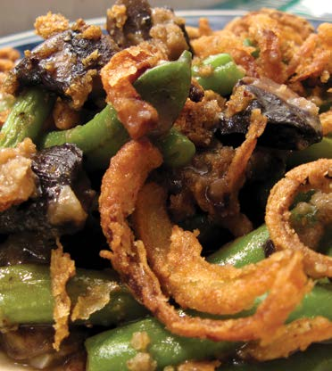

Green Bean
Casserole
Here’s another recipe for you to try at home. This month: Green Bean Casserole – a great side dish to enjoy with a big group of people!

Ingredients
- 1 can of cream of mushroom soup
- 125 ml of shredded cheddar cheese
- Small packet of chopped bacon bits
- 3 medium-sized tins of green beans (drained). Alternatively, use fresh produce
- 1 can of French fried onions (optional)
Method
- In a small saucepan, heat the soup, cheese and bacon pieces on medium/low heat.
- Stir the mixture until the cheese is melted.
- Drain the juice from the green beans, and put them in a standard-size oven safe dish.
- Pour the soup mixture on top of the green beans, and make sure that it is evenly coated.
- Top the mixture with French fried onions (optional)
- Bake at 150℃ until the onions are slightly browned. Or, if you make it without the onions, place in the oven for 15-20 minutes. As a side dish, it makes about 6 servings. ✪